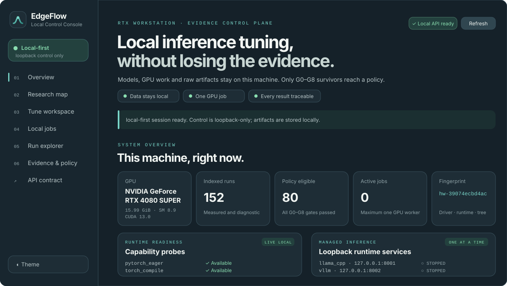
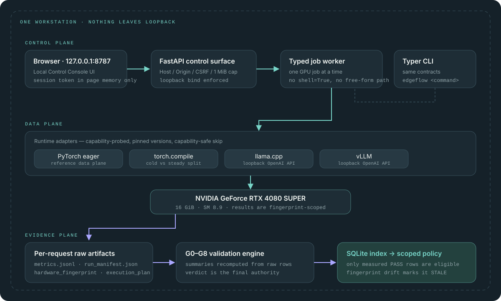

RTX workstation · evidence control plane
EdgeFlow turns local LLM deployment from ad-hoc benchmark chasing into an evidence-backed, workload-conditioned optimization process. Models, GPU work and raw artifacts never leave the machine.
What makes it different
EdgeFlow never assumes one runtime or one quantization wins. It preserves every per-request measurement and refuses to promote anything that did not survive validation.
Prompt distribution, output length, concurrency and session length are inputs — not a single blended number.
Cold start, compile, capture and steady state are stored separately, so amortization is a decision instead of an accident.
A bottleneck stays a HYPOTHESIS until a matched intervention and a mediator confirm it.
The fused Triton path runs only for a cached PASS on this kernel, GPU, dtype and shape. Otherwise: reference.
The product
One command, one browser tab, one machine. Start pinned llama.cpp or vLLM builds, define a workload, screen candidates, submit one controlled GPU benchmark, and read validation verdicts, raw artifacts, evidence and policy.

http://127.0.0.1:8787 — production surface, no demo rows.The server rejects non-loopback hosts, cross-origin writes, bodies over 1 MiB, and any shell, path or environment argument supplied by the browser.
One managed runtime and one GPU job at a time. Managed runtimes bind 127.0.0.1 with a random API key held only in process memory.
A public site is never a control plane. This page starts no experiments and reads no private artifacts.
Validation authority
Summaries are recomputed from raw rows, never trusted from a report. Verdicts are PASS, CONDITIONAL_PASS, FAIL, INVALID and SKIPPED — and failing artifacts stay on disk for audit.
| Gate | Enforced invariant |
|---|---|
| G0Schema | Required artifacts, schemas, IDs, canonical hashes, raw JSONL |
| G1Environment | GPU scope, and no unapproved background GPU process |
| G2Correctness | Reference parity / no NaN / kernel contract |
| G3Timing | Warmup split, monotonic timestamps, no profiler contamination |
| G4Stability | Robust CV, and first-vs-last-third drift ≤ 3% |
| G5Statistics | ≥ 30 engine requests, or ≥ 100 kernel iterations |
| G6Quality | Profile-specific hard gate; quantized plans cannot bypass it |
| G7Provenance | Pinned revision, exact command, git and source state |
| G8Eligibility | Only measured PASS runs may enter a policy |
System design
The control plane never touches the GPU directly, the data plane never decides what is true, and the evidence plane is the only path to a policy.

Quickstart
Python 3.11–3.13, an NVIDIA driver, and CUDA-enabled PyTorch. WSL2 Ubuntu or native Ubuntu recommended.
uv sync --extra dev source .venv/bin/activate edgeflow doctor edgeflow inspect --json \ --output artifacts/hardware_fingerprint.json
edgeflow workload create \
--model smollm2-360m-instruct \
--profile local-agent \
--prompt-distribution 32 --output 8 \
--concurrency 1 --session-requests 30 \
--save configs/generated/smoke-workload.json
edgeflow benchmark run \ --model-ref HuggingFaceTB/SmolLM2-360M-Instruct \ --workload configs/smoke/workload.json \ --plan configs/smoke/pytorch-eager.json \ --repetitions 30 --warmup 5 --experiment-id E04 edgeflow validate artifacts/<run_id>
# optional: pinned, isolated runtimes ./scripts/bootstrap_llama_cpp.sh ./scripts/bootstrap_vllm.sh edgeflow serve --host 127.0.0.1 --port 8787
Every run writes its own artifact directory: run_manifest.json, hardware_fingerprint.json, workload.json, execution_plan.json, metrics.jsonl, logs, validation_verdict.json and VALIDATION.md.
Honest limitations
Fingerprint and doctor, typed contracts, four runtime adapters, exact-token workloads, isolated run artifacts, the G0–G8 engine, robust statistics and paired bootstrap, deterministic diagnosis, decision-list policy, a correctness-cached Triton path, the CLI, the localhost API and the local-first web app.
Cross-runtime verdicts for the primary 3B model, quality datasets, matched interventions, holdout replay and end-to-end kernel integration still require formal GPU experiments. No performance headline is published until it clears G0–G8.
RTX 4080 SUPER results are never extrapolated to multi-GPU or datacenter GPUs. demo, estimated and profiled latency never appear in a headline.
Documentation